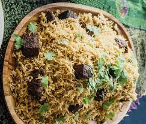

Home
Pilao Recipe

Description
Serving: 4-6
Preparation time: 20 minutes
Cooking time: 45 minutes
Pilao is a fragrant, one-pot rice dish packed with tender meat, spices, and vegetables. This dish is perfect for any occasion, offering a rich blend of flavours in every bite. Follow this simple recipe to create a delicious pilao that’s sure to impress.
Ingredients
- 2 cups of basmati rice
- 500g beef or goat meat, cut into cubes
- 1 large finely chopped onion
- 3 cloves garlic,minced and ginger
- 2 tomatoes, chopped
- 1 teaspoon pilao Masala and ground cumin
- 1 teaspoon ground black pepper
- 1 teaspoon turmeric powder
- 2-3 tablespoons of vegetable oil or ghee
- 4 cups beef broth or water
- 1 potato, peeled and diced
- Salt to taste and fresh coriander leaves, chopped (for garnish)
Steps
- Prepare the meat:
- In a large pot, heat the vegetable oil or ghee over medium heat
- Add the chopped onions and saute
- Add the minced garlic and ginger, and cook for another 2-3 minutes until fragrant.
- Add the meat cubes and cook until browned on all sides.
- Add spices:
- Add all spices to the pan. Stir well to coat the meat with th spices.
- Add the chopped tomatoes tp the pot and cook until they soften and blend with the spices. If using potatoes, add them and cook for about 5 minutes
- Cook the rice:
- Add the basmati rice to the pot and stir to mix with the meat and spices.
- Pour in the water and add salt to taste. Bring the mixture to a boil, then reduce the heat to low. Cover the pot and let it simmer.
- Cook the pilao for about 20-25 minutes or until the rice is fully cooked and the liquid has been absorbed.
- Serve:
- Fluff the pilao with a fork, and garnish with chopped fresh coriander leaves. Serve hot.
- Pilao is traditionally served with kachumbari (a fresh tomato and onion salad) so go ahead to make some. Enjoy your delicious East African pilao!